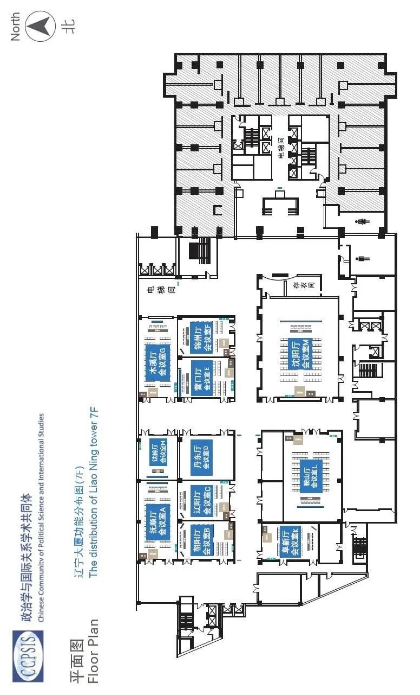

收录于合集

2021年“第十四届政治学与国际关系学术共同体年会”于7月5-6日在北京辽宁大厦举行，年会主题为“大变局下的政治学与国际关系学科”。年会由清华大学国际关系研究院主办，旨在为学界同仁搭建学术交流与合作的平台。
当今世界正面临一系列重大变局。主要大国间在安全、经济和科技等领域的竞争仍在加剧，新冠疫情对全球经济和社会秩序的冲击还在持续，全球产业链、供应链和价值链正在重组，多边合作和全球治理面临巨大压力，国际秩序调整的方向存在不确定性。世界格局在多重危机和挑战下加速变化，给政治学和国际关系学科提供了新的事实和经验。探索大变局发生的动力和机制，分析主要国家的国内发展和对外战略如何作出调整，研讨不同力量之间的分化组合，将为学科的知识生产和理论创新提供契机。
自2008年举办首届年会以来，政治学与国际关系学术共同体年会得到学界同仁的大力支持和广泛参与，是中国社会科学界规模最大、最具影响力的学术年会，推动了中国政治学和国际关系学科的发展。期待各位学界同仁继续支持本届年会的举办，围绕政治学与国际关系学科面临的重大理论和现实问题，积极组织圆桌论坛和专题研讨，交流思想，贡献智慧。
本届年会共有一场主旨论坛，111场圆桌论坛、专题研讨和博士生工作坊、两个讲习班以及22家出版物展示。

一、主办单位
清华大学国际关系研究院
二、 时间及地点
时 间：2021年7月5-6日地 点：辽宁大厦 海淀区北四环西路甲二号（保福寺桥东南角）
三、 会议注册
时间：7月5-6日 8:15-15:30 地点：辽宁大厦 一层大厅
四、 晚宴暨主旨论坛
时间：7月6日18:00-20:00 主旨论坛：大变局下的政治学与国际关系学科（辽宁大厦八层大会议厅）主持人：刘 丰（清华大学国际关系研究院教授）演讲人：贾庆国（北京大学国际关系学院原院长、教授）秦亚青（外交学院原院长、山东大学讲席教授）唐世平（复旦大学特聘教授、陈树渠讲席教授）阎学通（清华大学文科资深教授、国际关系研究院院长）杨光斌（中国人民大学国际关系学院院长、教授）
五、 具体日程
7月5日第一节 8:45-10:15 1. 中美正在走向新冷战吗？（辽宁大厦7层沈阳厅—M） 主持人：徐
进（中国社会科学院世界经济与政治研究所研究员）联系邮箱：xuj@cass.org.cn发言人：吴心伯（复旦大学国际问题研究院院长、教授）董春岭（中国现代国际关系研究院副研究员）王
鹏（中国人民大学国际能源战略研究中心研究部）章 珏（北京大学国际关系学院博士生）陈 哲（江西财经大学一带一路研究院院长、副教授）
2. 大变局中的日本外交战略调整及中日关系（I）（辽宁大厦7层本溪厅—G）
主持人：吕耀东（中国社会科学院日本研究所副所长、研究员）联系邮箱：zyj1028353239@163.com发言人：孙伶伶（中国社会科学院日本研究所研究员）孟晓旭（中国社会科学院日本研究所研究员）卢
昊（中国社会科学院日本研究所综合战略研究室副主任、副研究员）庞中鹏（中国社会科学院日本研究所副研究员）评论人：张
勇（中国社会科学院日本研究所外交研究室副主任、研究员）
3. 缅军再度接管政权的背景、原因和趋势（辽宁大厦7层抚顺厅—A） 主持人：孔
鹏（云南大学缅甸研究院院长）联系邮箱：765725688@qq.com发言人：李晨阳（云南大学常务副校长、研究员）王子昌（暨南大学东南亚研究所教授）：谁扣押了昂山素季宋清润（北京外国语大学亚洲学院副教授）：缅甸变迁社会中的军人祝湘辉（云南大学缅甸研究院副院长、研究员）：冷战后美国对缅甸政策的变迁钟小鑫（云南大学缅甸研究院、副研究员）：族群化约主义：缅甸族群政治的生成模式——以缅印关系为中心程子洲（云南大学外国语学院）：缅军再次接管国家权力——政治转型的倒退还是自我纠偏？讨论人：杨国影（北京大学外国语学院副教授）
4. 新形势下的中国与中东（辽宁大厦7层鞍山厅—L）
主持人：孙德刚（复旦大学中东研究中心）联系邮箱：sundegang@fudan.edu.cn发言人：包澄章（上海外国语大学中东研究所）：新形势下中东地区行为体对华态度转变的原因及表现张屹峰（复旦大学中东研究中心）：新形势下中国对阿拉伯国家能源合作的国际政治经济学分析张玉友（西北大学中东研究所）：新形势下中国与阿拉伯国家政治合作的基础、路径与机制俞海杰（复旦大学中东研究中心）：新形势下中国在中东地区推进“一带一路”倡议身份构建研究张
帅（上海政法学院政府管理学院）：新形势下中国对中东国家的农业外交孙德刚（复旦大学中东研究中心）：新形势下中国对阿拉伯国家的政党外交评论人：佘纲正（清华大学国际关系学系）
5. 数字时代的国家安全（I）（辽宁大厦7层朝阳厅—B） 主持人：郎
平（中国社会科学院世界经济与政治研究所研究员）联系邮箱：langping@cass.org.cn发言人：崔保国（清华大学新闻与传播学院教授）沈
逸（复旦大学网络空间治理研究基地主任、教授）鲁传颖（上海国际问题研究院研究员）刘 典（中国人民大学重阳金融研究院副研究员）华
盾（上海外国语大学上海全球治理与区域国别研究院博士）评论人：李 艳（中国现代国际关系研究院科技与网络安全所副所长）
6. 比较政治遇到区域国别研究：以非洲为对象（I）（辽宁大厦7层辽阳厅—C）
主持人：黄振乾（中国农业大学人文与发展学院/国际发展与全球农业学院）联系邮箱：zhenqianh@cau.edu.cn发言人：罗
楠（北京大学国际关系学院）：国际发展与非洲能动性：以离网光伏在肯尼亚的推广过程为例赵德昊（吉林大学行政学院）：中国对非研究：以博士论文为中心的考察魏
翊（复旦大学国际关系与公共事务学院）：冲突情境与政治控制——当代非洲分权改革的政治逻辑邹雨君（北京大学国际关系学院）：国际议程与国内政治——浅析乌干达穆塞韦尼政府的教育政策演变吴纪远（复旦大学国际关系与公共事务学院）：非洲国家的疫情、封锁政策与社会冲突评论人：李小云（中国农业大学人文与发展学院/国际发展与全球农业学院）唐晓阳（清华大学社会科学学院国际关系学系）
7. 中美战略竞争背景下的“长臂管辖”与反制（辽宁大厦7层营口厅—E） 主持人：戚
凯（中国政法大学全球化与全球问题研究所副教授）联系邮箱：qikai1988@gmai.com发言人：戴梦皓（金杜律师事务所国际贸易合规团队顾问）隆德新（广东外语外贸大学广东国际战略研究院副教授）方炯升（复旦大学国际关系与公共事务学院博士生）徐书林（中国政法大学国际法学院国际私法专业博士生）戚
凯（中国政法大学全球化与全球问题研究所副教授）邵志成（中山大学国际关系学院）：联盟分化的威胁性楔子战略
8. 后脱欧时代的欧盟发展新挑战与中欧关系新态势（辽宁大厦7层阜新厅—K） 主持人：吴
宇（西南政法大学政治与公共管理学院副教授、政治学研究所所长）联系邮箱：854655126@qq.com发言人：吴
宇（西南政法大学政治与公共管理学院副教授、政治学研究所所长）钟
准（重庆大学人文社会科学高等研究院副教授）张榕麟（西南政法大学政治与公共管理学院）赵豆豆（西南政法大学政治与公共管理学院）
9. 比较视野中的法律、法院与司法治理（I）（辽宁大厦7层锦州厅—F）
主持人：左卫民（四川大学法学院教授）联系邮箱：xyu@tsinghua.edu.cn发言人：张永健（台湾中研院研究员）：判例先例的生与死王
娟（加拿大麦吉尔大学政治学系副教授）：The Paradigm Shift of Disciplining Village Cadres in China习
超（香港中文大学法律学院教授）：The Diffusion of Law in China孙 卉（美国西北大学管理学院博士生）：Relational
Embeddedness in the Courtroom冯煜清（东南大学法学院副教授）：Judicial Resilience in China评论人：胡
悦（清华大学政治学系副教授）于晓虹（清华大学政治学系副教授）
10. 北极治理的国际分歧与中国主张（辽宁大厦7层铁岭厅—H）
主持人：陈朝晖（大连海洋大学海洋法律与人文学院副教授）联系邮箱：hui4179@aliyun.com会议秘书：王孟夏（中国留学人才发展基金会一带一路研究院研究员）发言人：金
毅（渤海大学马克思主义学院教授）姚天冲（东北大学文法学院副教授）魏德才（海南大学法学院副教授）郭小虎（渤海大学马克思主义学院副院长）陈朝晖（大连海洋大学海洋法律与人文学院副教授）宋宁而（中国海洋大学国际事务与公共管理学院副教授）于
佳（大连海事大学法学院博士后）
11. 实证冲突研究（辽宁大厦7层丹东厅—D）
主持人：苏若林（上海交通大学国际与公共事务学院助理教授）联系邮箱：ruolinsu@sjtu.edu.cn发言人：姚
炯（中山大学国际关系学院特聘副研究员）：贸易和评论与边界诉求的结束王
凯（上海外国语大学国际关系与公共事务学院讲师）周亦奇（上海国际问题研究院公共政策所助理研究员）苏若林（上海交通大学国际与公共事务学院助理教授）葛泽坤（杜克大学政治学系研究生）：War,
Peace and the Size of Countries Revisited评论人：漆海霞（清华大学国际关系研究院副院长、副教授）
12. 博士生工作坊（I）（辽宁大厦7层会客室）
主持人：董柞壮（南开大学周恩来政府管理学院讲师）联系邮箱：dzz@nankai.edu.cn发言人：潘芃杉（匹兹堡大学）：中国采矿业投资对吉尔吉斯斯坦劳动力市场和地方政治的影响刘文龙（对外经济贸易大学国际关系学院）：区块链与加密民主：通往选民信任之路？朱穆朗玛（大连理工大学马克思主义学院）：英国保守党民粹化倾向的演进历程、原因及影响探究
——基于 2010-2019
年竞选宣言的文本分析刘宇宁（外交学院国际关系研究所）：拜登政府气候战略及对中美关系的影响毛闰铎（对外经贸大学国际关系学院）：生产要素的跨国演化与贸易政策的历时变迁：一项比较政治经济学的研究议程评论人：张发林（南开大学周恩来政府管理学院副教授）董柞壮（南开大学周恩来政府管理学院讲师）
13. 后疫情时代下中国应如何与拉丁美洲国家展开非传统安全合作？（How should China carry out Non-
Traditional Security Cooperation with Latin American countries in the Post-
Pandemic Era?） （腾讯会议号：383 246 471，密码：202188——调至7月6日同一时段）
主持人：杨恒一（圣皮耶国际安全中心研究员）联系邮箱：980623888@qq.com发言人：Margaret
Myers（美洲对话组织亚洲与拉美项目主任）Alfonso Jiménez Cascante（哥斯达黎加莫拉市市长）刘
仪（海国图智研究院研究员）Eduardo Klinger（多米尼加共和国科学院院士）Barbara Fernandez
Melleda（香港大学拉美研究助理教授）
14. 博士生工作坊（II）（腾讯会议号：123607664，密码：202107）
主持人：陈一一（兰州大学政治与国际关系学院副教授）联系邮箱：cyy@lzu.edu.cn发言人：倪桂桦（南京大学政府管理学院）：美国制裁体系在其国家安全战略中的运用韩梦雨（复旦大学国际关系与公共事务学院）：美国经济外交的演化逻辑与动力机制——对外贸易的视角高
原（南京大学政府管理学院）：冷战后美国贸易政策变迁的演进逻辑——侧重于制度渐变视角的考察姚
远（南开大学周恩来政府管理学院）：国际金融公共产品类型化与中美供给竞争评估胡启月（北京师范大学地理科学学部）：中美双边关系动态演变的定量刻画——数据和分析的重要性评论人：贺
凯（澳大利亚格里菲斯大学亚洲研究所教授）陈一一（兰州大学政治与国际关系学院副教授）
休息 10:15-10:30
7月5日第二节 10:30-12:00
15. 大国崛起：制衡与制度竞争（辽宁大厦7层沈阳厅—M）
主持人：漆海霞（清华大学国际关系研究院副院长、副教授）联系邮箱：qihaixia@mail.tsinghua.edu.cn发言人：任
琳（中国社会科学院世界经济与政治研究所副研究员)凌胜利（外交学院国际关系研究所副教授）：中美国际制度策略取向为何不同王
鹏（中国人民大学中国对外战略研究中心主任助理）：印太地区的中美制度竞争—以战略与经济为中心黄宇韬（中国社会科学院世界经济与政治研究所助理研究员）：崛起国的竞争性自主：在制度竞争之前葛泽坤（杜克大学政治学系研究生）：大国间和平共处评论人：漆海霞（清华大学国际关系学系副教授）
16. 大变局中的日本外交战略调整及中日关系（II）（辽宁大厦7层本溪厅—G）
主持人：吕耀东（中国社会科学院日本研究所副所长、研究员）联系邮箱：zyj1028353239@163.com发言人：常思纯（中国社会科学院日本研究所副研究员）谢若初（国际关系学院国际政治系讲师）赵迎结（中国社会科学院大学日本研究系国际关系专业博士生）王
方（中国社会科学院大学日本研究系国际关系专业博士生） 评论人：张 勇（中国社会科学院日本研究所外交研究室副主任、研究员）
17. 缅军再度接管政权后的国际环境（辽宁大厦7层抚顺厅—A） 主持人：孔
鹏（云南大学缅甸研究院院长）联系邮箱：765725688@qq.com发言人：许利平（中国社会科学院亚太与全球战略研究院研究员）：东盟角色与缅甸变局 赵
瑾（北京外国语大学亚洲学院副教授）：中缅民心相通——近在咫尺，远在天涯杜
兰（中国国际问题研究院副研究员）：缅甸政局突变后各方在缅开启新一轮博弈杨祥章（云南大学缅甸研究院助理研究员）：缅军再度接管政权与东盟一体化张
添（云南大学缅甸研究院助理研究员）：缅甸军人接权以来的对外政策分析讨论人：杨国影（北京大学外国语学院副教授）
18. 美国新政府与中东新变局（辽宁大厦7层鞍山厅—L）
主持人：佘纲正（清华大学国际关系学系助理教授）联系邮箱：shegangzheng@tsinghua.edu.cn发言人：牛新春（中国现代国际关系研究院中东研究所所长、研究员）孙德刚（复旦大学中东研究中心主任，复旦大学国际问题研究院研究员）唐志超（中国社会科学院西亚非洲所政治研究室主任、研究员）田文林（中国人民大学国际关系学院教授）王锁劳（北京大学区域与国别研究院副院长、北京大学国际关系学院副教授）
19. 数字时代的国家安全（II）（辽宁大厦7层朝阳厅—B） 主持人：郎
平（中国社会科学院世界经济与政治研究所研究员）联系邮箱：langping@cass.org.cn发言人：刘兴华（南开大学周恩来政府管理学院副教授）安
静（北京科技大学马克思主义学院副教授）张 元（中国社科院世界经济与政治研究所国家安全研究室助理研究员）扎
兰（哈佛大学博士后访学）张慧敏（华东师大国际关系与地区发展研究院博士生）评论人：许蔓舒（上海国际问题研究院特聘研究员）
20. 比较政治遇到区域国别研究：以非洲为对象（II）（辽宁大厦7层辽阳厅—C）
主持人：敖缦云（中国传媒大学坦桑尼亚研究中心）联系邮箱：zhenqianh@cau.edu.cn发言人：王
凯（上海外国语大学国际关系与公共事务学院）：非洲去殖民化时期的国内政治模式探析李杭蔚（伦敦大学亚非学院）：Media Politics and
Representation of China in Africa: A Comparative Study of Kenyan and Ethiopian
Media贺嵬嵬（复旦大学经济学院）：非洲孔院对中国形象的影响研究潘芃杉（匹兹堡大学公共与国际事务学院）：The Consequences of
Chinese Mining Investment for Kyrgyzstan’s Labor Market and Domestic
Politics王珊珊（厦门理工学院）：“一带一路”倡议对非洲债务的影响：基于DID的实证检验评论人：齐顾波（中国农业大学人文与发展学院/国际发展与全球农业学院）胡
悦（清华大学社会科学学院政治学系）
21. 新时代中国特色周边外交的理论创新（辽宁大厦7层营口厅—E）
主持人：李小冬（云南大学国际关系研究院博士生）联系邮箱：yuishzz@163.com发言人：肖
阳（中共湖北省委党校（湖北省行政学院）政法教研部讲师）：从区域到领域：中国周边学争论的基本问题与多维视角余
姣（复旦大学国际关系与公共事务学院博士生）：周边国际组织与中国的周边外交杜心蕾（中国人民大学国际关系学院博士生）谢牧宇（复旦大学全球公共政策研究院）：双层博弈视角下的澜湄大气污染次区域合作困境分析刘
静（湘潭大学马克思主义学院）：中泰减贫合作的基础、挑战及对策建议杜洞光（辽宁大学国际经济政治学院）：崛起国的国际权力原理——一个新时代中国特色外交理论的研究议程李小冬（云南大学国际关系研究院博士生）：构建周边命运共同体的理论和实践路径讨论人：杨
原（中国社会科学院世界经济与政治研究所副研究员）李志斐（中国社会科学院亚太与全球战略研究院副研究员）评论人：张清敏（北京大学国际关系学院教授）周方银（广东外语外贸大学国际关系学院院长、教授）
22. 中美结构性权力之争（辽宁大厦7层阜新厅—K） 主持人：吴
限（清华大学国际关系学系博士生）联系邮箱：wuxian19@mails.tsinghua.edu.cn发言人：李
巍（中国人民大学国际关系学院教授）张发林（南开大学周恩来政府管理学院副教授）戚 凯（中国政法大学全球化与全球问题研究所副教授）刘
斌（对外经济贸易大学中国世界贸易组织研究院研究员）王宗昊（清华大学国际关系学系）：中美贸易战——全球价值链网络下的结构性冲突
23. 比较视野中的法律、法院与司法治理（II）（辽宁大厦7层锦州厅—F）
主持人：白建军（北京大学法学院教授）联系邮箱：xyu@tsinghua.edu.cn发言人：魏
建（山东大学经济研究中心教授）权利保护不同方式的绩效比较程金华（上海交通大学凯原法学院教授）：中国法官的职业认同郭志媛（中国政法大学刑法学院教授）：Cross-
Examination of Witness in Chinese Criminal Courts孟天广（清华大学政治学系
副教授）：立案登记制改革与行政纠纷司法化解决陈天昊（清华大学公管学院助理教授）：The Chinese Court as Information
Discoverer in the Policy Process评论人：陈杭平 （清华大学法学院副教授）冯 晶 （西南政法大学法学院讲师）
24. 新冠肺炎疫情背景下的全球难民移民治理（辽宁大厦7层铁岭厅—H）
主持人：吴昊昙（中共中央党校国际战略研究院助理研究员）联系方式：wuhaotanhao@163.com发言人：程多闻（北京外国语大学国际关系学院副教授）：新冠疫情冲击下的跨国劳工移民与全球发展董筱曼（北京外国语大学国际组织学院讲师）：难民的疫情防护对国际组织正当性的影响吕晓宇（北京大学国际关系学院助理教授）：疫情下的国际冲突和难民流动张倩雨（中国人民大学国际关系学院博士生）：移民汇款的韧性及其政治经济意涵朱睿智（联合国难民署驻卢旺达前副保护官）：新冠疫情下的难民教育贫困评论人：陈积敏（中共中央党校国际战略研究院教授）吴文成（《外交评论》编辑部主任、副教授）
25. 技术治理与基层政权建设（辽宁大厦7层丹东厅—D）
主持人：付建军（华东政法大学政治学与公共管理学院讲师）联系邮箱：jianjundongxian@126.com发言人：张振洋（上海师范大学哲学与法政学院副教授）原
超（山西大学城乡发展研究院副教授）韩 啸（电子科技大学公共管理学院讲师）范佳佳（上海市社会科学院信息研究所副研究员）赵
吉（上海交通大学国际与公共事务学院博士）刘 旭（上海交通大学国际与公共事务学院博士）邓 雪（上海交通大学国际与公共事务学院博士）
26. 博士生工作坊（III）（辽宁大厦7层会客室） 主持人：陈
永（上海社会科学院国际问题研究所助理研究员）联系邮箱：发言人：苏乔拓（上海社会科学院世界中国学研究所）：丝通古今：古代丝绸之路的历史经验对“一带一路”实施策略的启示任
莹（中国现代国际关系研究院）：如何从国家安全战略视角认识总体国家安全观李
奇（航天工程大学）：太空战略与安全构建张翊梁（山东大学东北亚学院）：海洋时代海陆复合型崛起国以弱胜强战略研究赵
帅（吉林大学行政学院）：美国对华遏制的国际政治社会学探析评论人：陈 永（上海社会科学院国际问题研究所助理研究员）王亚琪（南开大学周恩来政府管理学院讲师）
27. 博士生工作坊（VI）（腾讯会议号：445733301；密码：202107）
主持人：何晴倩（中国政法大学政治与公共管理学院讲师）联系邮箱：qingqian@cupl.edu.cn发言人：李林杰（四川大学国际关系学院）：后特朗普时代的中美关系与台湾问题廖芍楠（暨南大学国际关系学院）：中美博弈背景下海外香港青年的“家国”意识研究—基于地方认同与全球联系的视角欧阳旭婉（昆士兰大学政治与国际关系学院）：中国参与建设和平的理念与实践：基于缅甸案例的探讨邢
晶（马来亚大学）：危中寻机：后疫情时代中蒙俄经济走廊公共外交的挑战与展望评论人：蒲晓宇（美国内华达大学政治学副教授）何晴倩（中国政法大学政治与公共管理学院讲师）
7月5日第三节 13:30-15:00
28. 中美维护战略稳定、管控军备竞争风险的可行措施（辽宁大厦7层本溪厅—G） 主持人：赵 通（清华-
卡内基全球政策中心研究员）联系邮箱：tzhao@ceip.org发言人：樊吉社（中共中央党校国际战略研究院研究员、全球治理与国际组织研究所所长）郭晓兵（中国现代国际关系研究院军控研究中心主任、研究员）李
彬（清华大学国际关系学系教授）李驰江（中国军控与裁军协会副会长兼秘书长）吴日强（中国人民大学国际关系学院副教授）姚云竹（中国人民解放军退役少将、清华大学国际战略与安全研究中心学术委员）
29. 东南亚国内政治与对外关系（辽宁大厦7层沈阳厅—M）
主持人：王昭晖（厦门大学国际关系学院/南洋研究院副教授）联系邮箱：zhaohuiwang@xmu.edu.cn发言人：查
雯（外交学院国际关系研究所副教授）：中美竞争下次强国对冲战略的演变温
尧（复旦大学国际问题研究院助理研究员）：对冲、长和平与日常政治的价值升华付宇珩（暨南大学国际关系学院/华侨华人研究院讲师）：例外状态下的国家权力：新冠疫情对东南亚国家治理的影响贺嘉洁（复旦大学国际关系与公共事务学院青年副研究员）：对话关系协调国与东盟的对外关系刘若楠（对外经贸大学国际关系学院副教授）：国内政治与东南亚国家的对华战略空间王昭晖（厦门大学国际关系学院/南洋研究院副教授）：类型学视角下海洋东南亚国家合作共建“一带一路”基础设施项目叶丽萍（广州大学马克思主义学院讲师）
30. 中国对外援助的理论与实证创新（I）（辽宁大厦7层抚顺厅—A）
主持人：徐秀丽（中国农业大学人文与发展学院）联系邮箱：zhenqianh@cau.edu.cn发言人：孙靓莹（中国社会科学院世界经济与政治研究所）：国际援助的中外比较：概念、统计口径与差异陈雪柯（重庆大学人文社会科学高等研究院）：经验扩散与治理能力：中埃“三网一化”发展合作对埃塞俄比亚的影响程子龙（上海政法学院上海全球安全治理研究院）：中国与联合国人道主义援助体系蒋华杰（上海大学文学院历史系）：身份、空间与政治：跨国史视角下的中国援非专家日记解读（1971-1975）彭
枭（上海社会科学院国际问题研究所）：德国灾难援助外交的动机层次与演进逻辑张
超（中国社会科学院欧洲研究所）：中美欧人道主义援助模式的比较与借鉴评论人：陆继霞（中国农业大学人文与发展学院/国际发展与全球农业学院）张传红（中国农业大学人文与发展学院/国际发展与全球农业学院）
31. 新冠疫情背景下日本的“内”与“外”（I）（辽宁大厦7层鞍山厅—L） 联系人：邱
静（中国人民大学国际关系学院副教授）邮箱：qiujing@ruc.edu.cn发言人：熊淑娥（中国社会科学院日本研究所助理研究员）张
勇（中国社会科学院日本研究所研究员）朱晓琦（中国人民大学国际关系学院讲师）常思纯（中国社会科学院日本研究所副研究员）程
蕴（南开大学日本研究院讲师）评论人：归泳涛（北京大学国际关系学院副教授）贺
平（复旦大学日本研究中心教授）耿协峰（中国政法大学全球化与全球问题研究所教授）唐奇芳（中国国际问题研究所副研究员）唐利国（北京大学历史系副教授）唐永亮（中国社会科学院日本研究所研究员）
32. 战略互动与外交信号理论研究（辽宁大厦7层朝阳厅—B）
主持人：尹继武（中国人民大学国际关系学院教授）联系方式：benyin109@163.com发言人：吴文成（《外交评论》编辑部主任、副教授）杨
原（中国社会科学院世界经济与政治研究所国际政治理论研究室主任、副研究员）姚
炯（中山大学国际关系学院特聘副研究员）王梓元（外交学院国际关系研究所讲师）曹德军（中国人民大学国际关系学院讲师）莫盛凯（国际关系学院国际政治系讲师）杨
洋（牛津大学全球与区域研究学院/中国人民大学国际关系学院）评论人：徐 进（《世界经济与政治》编辑部主任、研究员）尹继武（中国人民大学国际关系学院教授）
33. 数字技术革命背景下的新型大国竞争（I）（辽宁大厦7层辽阳厅—C）
主持人：叶成城（上海社会科学院国际问题研究所副研究员）联系邮箱：peace_ye@126.com发言人：黄琪轩（上海交通大学教授）：亚洲国家和地区承接美国技术转移的政治经济郝诗楠（上海外国语大学副教授）：高科技跨国公司的政治化与国家化刘
典（中国人民大学重阳金融研究院副研究员）：数据即权力——中美欧不同数据治理导向下的全球战略竞争耿
召（上海市委党校（上海行政学院）讲师）：拜登政府网络空间政策走向及中国的应对讨论人：阙天舒（华东政法大学教授）郝诗楠（上海外国语大学副教授）黄振乾（中国农业大学副教授）武
祥（复旦大学博士生）
34. 大国如何开展军事安全竞争？（I）（辽宁大厦7层营口厅—E）
主持人：徐若杰（中国社会科学院欧洲研究所助理研究员）联系邮箱：602364541@qq.com发言人：徐若杰（中国社会科学院欧洲研究所助理研究员）：大国军事安全竞争何以不战而胜？—里根政府对苏军事竞争战略的逻辑文少彪（上海外国语大学中东研究所助理研究员）：大国间战争形态的变化与代理人战争沈若豪（上海国际战略研究会秘书）：美日同盟对地区军事安全竞争的影响秦立志（大连外国语大学国际关系学院讲师）：大国军事安全竞争的动力机制与历史启示汪
遒（复旦大学国际关系与公共事务学院博士生）：大国在大湄公河次区域的安全竞争王思羽（上海外国语大学上海全球治理与区域国别研究院师资博士后）：顿巴斯冲突后乌克兰军政关系变革及其对东欧安全局势影响评论人：左希迎（中国人民大学国际关系学院副教授）王
浩（复旦大学美国研究中心副教授）
35. 大国竞争下的中等国家外交（辽宁大厦7层阜新厅—K） 主持人：刘
丹（广东外语外贸大学加拿大研究中心讲师）/戴维来（同济大学政治与国际关系学院外交学系副教授）联系邮箱：liudan2159@163.com发言人：卫艺璇（复旦大学国际关系与公共事务学院博士生）：文在寅政府时期的朝韩关系与美国因素齐为群（中国人民大学国际关系学院博士生）：大国科技竞争时代的中等国家选择——加拿大与澳大利亚华为5G政策比较伍梦茹（北京大学国际关系学院博士生）：中等强国对国际规范的塑造能力分析孙雪松（吉林大学行政学院国际政治系博士生）：中美战略竞争背景下加拿大对华战略
基于依附型中等强国外交行为理论的分析崔镤戈（外交学院国际关系研究所博士生）：对冲还是制衡？中美竞争背景下越南、菲律宾、马来西亚对华战略对比分析王文琦（同济大学政治与国际关系学院博士生）：权力变更、认同差异与中等强国的区域战略选择——基于加、南、伊、澳的比较案例研究赵乙臻（华中师范大学政治与国际关系学院）：日本对《区域全面经济伙伴关系协定》的认知与评价评论人：戴维来（同济大学政治与国际关系学院外交学系副教授）
36. 世界百年未有之大变局与中国统一战线（辽宁大厦7层铁岭厅—H）
主持人：张家铭（山东省社会主义学院统战理论教研部讲师）联系邮箱：18801624867@126.com发言人：张家铭（山东省社会主义学院）：全球疫情下的百年变局与中国统一战线张少东（大阪大学国际公共政策研究科）：改革开放时期中国留学生政策的变迁宋菊芳（北京社会主义学院
副教授）：民主党派高层次人才的培养与安排使用研究——以北京市为例王政祺（华南师范大学政治与公共管理学院）：习近平“大统战”重要论述的方法论研究张
星（上海市社会主义学院博士）：世界百年未有之大变局与新型政党制度评论人：任 蓓（重庆社会主义学院副教授）
37. 南极治理六十年：回顾与展望 （腾讯会议号：282 120 284；密码：210705）
主持人：王婉潞（南京大学政府管理学院助理研究员）联系邮箱：wangwanlu@nju.edu.cn发言人：邓贝西（中国极地研究中心极地政策研究室副研究员）：南极事务“垄断”格局：形成、实证与对策吴宁铂（上海对外经贸大学法学院讲师）：澳大利亚对华南极政策走向与应对徐庆超（中国科学院大学助理研究员）：北极气候治理中的科学外交：中国科学家的视角王婉潞（南京大学政府管理学院助理研究员）：南极条约协商会议的组织结构变迁评论人：郭红岩（中国政法大学国际法学院教授）刘贞晔（中国政法大学全球化与全球问题研究所教授）
38. 国际关系英国学派：进展与反思 （腾讯会议号：726 596 880，密码：321456） 主持人：施
榕（北京大学国际关系学院博士生）联系邮箱：shirong@pku.edu.cn发言人：施 榕（北京大学国际关系学院博士生）王
达（北京外国语大学博士生）严骁骁（上海社会科学院国际问题研究所助理研究员）刘
波（北京社会科学院外国问题研究所所长、研究员）评论人：张小明（北京大学国际关系学院教授）任东波（吉林大学文学院世界史系教授）周桂银（厦门大学国际关系学院教授）马国林（兰州大学政治与国际关系学院副教授）
39. 博士生工作坊（V） （腾讯会议号：978960744，密码：202107）
主持人：尹伟文（香港教育大学亚洲及政策研究学系助理教授）联系邮箱：wwyin@eduhk.hk发言人：明元鹏（广东外语外贸大学广东国际战略研究院）：数字货币规制：从国家监管到全球治理葛泽坤（杜克大学政治学系）：一个大国间和平共处的理论王俊超（兰州大学政治与国际关系学院）：“一带一路”视域下中巴经济走廊建设：机遇、挑战及应对刘彦池（新西兰坎特伯雷大学）：中美欧盟三角关系文献综述评论人：何晴倩（中国政法大学政治与公共管理学院讲师）尹伟文（香港教育大学亚洲及政策研究学系助理教授）
休息 15:00-15:15
7月5日第四节 15:15-16:45
40. 数字时代的国际关系（辽宁大厦7层沈阳厅—M）
主持人：孙学峰（清华大学国际关系研究院常务副院长、教授）联系邮箱：sunxuefeng@tsinghua.edu.cn发言人：李
彬（清华大学国际关系学系教授）、罗易煊（清华大学国际关系学系硕士生）陈
琪（清华大学国际关系学系教授、中美关系研究中心主任）、朱荣生（清华大学战略与安全研究中心博士后、助理研究员）佘纲正（清华大学国际关系学系助理教授）、罗天宇（清华大学国际关系学系博士生）陈
冲（清华大学国际关系学系助理教授）赵屿佳（山东大学亚太所讲师）评论人：周方银（广东外语外贸大学国际关系学院院长、教授）刘 丰（清华大学国际关系研究院教授）
41. 疫情下的南亚与印太格局（I）（辽宁大厦7层本溪厅—G）
主持人：曹升生（安徽师范大学巴基斯坦研究院执行院长）联系邮箱：xmucss@126.com发言人：张书剑（中国现代国际关系研究院助理研究员）李红梅（上海国际问题研究院助理研究员）宁胜男（中国国际问题研究院助理研究员）郑海琦（中国人民大学国际关系学院博士生）程智鑫（中国人民大学国际关系学院博士生）：印太战略视角下法国与印度战略伙伴关系评论人：孙现朴（中共中央党校国际战略研究院副教授）
42. 中国对外援助的理论与实证创新（II）（辽宁大厦7层抚顺厅—A）
主持人：黄振乾（中国农业大学人文与发展学院/国际发展与全球农业学院）联系邮箱：zhenqianh@cau.edu.cn发言人：胡建梅（河北工业大学经济管理学院）：对外援助机构设置与双边援助分配阮志航（西北大学政治学系）：Framing
and Support for Foreign Aid Among Chinese Nationals During COVID-19蔡
洁（南京财经大学国际经贸学院）：中国对外援助与软实力提升：以人类命运共同体理念传播为例潘心如（杜克大学政治学系）：效益优先还是政治至上？中国对非援助次国家分配的逻辑汤可依（约翰斯·霍普金斯大学）：Development
Finance and Distributive Politics: Comparing Chinese and World Bank Finance in
sub-Saharan Africa郭士祺（上海交通大学安泰经济与管理学院）Chinese Aid and Local Employment in
Africa李元馨（南京理工大学公共事务学院）：Does Chinese Foreign Aid Work in Sub-Saharan Africa?
An Empirical Analysis评论人：郑 宇（复旦大学国际关系与公共事务学院）钱 璟（普林斯顿大学政治学系）
43. 新冠疫情背景下日本的“内”与“外”（II）（辽宁大厦7层鞍山厅—L） 主持人：邱
静（中国人民大学国际关系学院副教授）联系邮箱：qiujing@ruc.edu.cn发言人：潘妮妮（华东师范大学传播学院副教授）代红光（外交学院外语系副教授）钱昕怡（中国人民大学外国语学院副教授）庄
娜（中国社会科学院大学国际关系学院讲师）评论人：归泳涛（北京大学国际关系学院副教授）贺
平（复旦大学日本研究中心教授）耿协峰（中国政法大学全球化与全球问题研究所教授）唐奇芳（中国国际问题研究所副研究员）唐利国（北京大学历史系副教授）唐永亮（中国社会科学院日本研究所研究员）
44. 外交关系修复的政治心理学（辽宁大厦7层朝阳厅—B）
主持人：尹继武（中国人民大学国际关系学院教授）联系邮箱：benyin109@163.com发言人：王广涛（复旦大学国际问题研究院副教授）王
晋（西北大学中东研究所副教授）刘
毅（青岛大学政治与公共管理学院讲师）李宏洲（中国人民大学国际关系学院博士生）朱晨歌（中国人民大学国际关系学院博士生）葛晓畅（中国人民大学国际关系学院博士生）评论人：张清敏（北京大学国际关系学院教授）熊
炜（外交学院外交学系教授）
45. 数字技术革命背景下的新型大国竞争（II）（辽宁大厦7层辽阳厅—C）
主持人：叶成城（上海社会科学院国际问题研究所副研究员）联系邮箱：peace_ye@126.com发言人：封
帅（上海国际问题研究院副研究员）：人工智能时代的政治安全挑战叶成城（上海社会科学院国际问题研究所副研究员）：生产资料、数字权力与后工业化时代的大国竞争周亦奇（国际问题研究院助理研究员）：民主防卫与西方国家打压国外高科技公司的逻辑动因孟凯强（同济大学政治与国际关系学院研究生）：数字化时代外交的舆情机制演变讨论人：李淑华（《俄罗斯学刊》编辑部主任）王
浩（复旦大学副教授）王 凯（上海外国语大学讲师）彭 枭（上海社会科学院国际问题研究所助理研究员）
46. 大国如何开展军事安全竞争？（II）（辽宁大厦7层营口厅—E） 主持人：袁
勋（上海外国语大学上海全球治理与区域国别研究院助理研究员）联系邮箱：602364541@qq.com发言人：袁
勋（上海外国语大学上海全球治理与区域国别研究院助理研究员）：大国竞争与中亚地区的安全秩序演进王佳霖（复旦大学国际关系与公共事务学院博士生）：解构美国对华安全竞争战略：政党政治的视角周亦奇（上海国际问题研究院助理研究员）：多重身份与复杂联系：叙利亚内战后的大国介入杨
路（中央党校国际战略研究院讲师）：印度周边安全战略的演进逻辑孙西辉（中国社科院亚太所副研究员）：印度对大国遏华政策的立场选择评论人：王
浩（复旦大学美国研究中心副教授）
47. 台湾研究与两岸关系（辽宁大厦7层锦州厅—F） 主持人：黄宗昊（上海交通大学国际与公共事务学院讲师）
联系邮箱：michahuang@sjtu.edu.cn发言人：吴维旭（清华大学台湾研究院助理研究员）：花钱买笑脸？两岸政经分离逻辑下的两岸贸易逆差问题探析赵子龙（广西财经学院桂台协同创新发展中心副研究员）：大陆涉台经济政策特点与“争先”扩散的影响因素研究——基于《台胞投资保护法》的政策文本计量和事件史分析白
玉（江苏科技大学人文社会科学学院讲师）：台湾生物医药产业发展困境的政治分析田
弘（上海交通大学国际与公共事务学院博士生）：台湾疫情爆发下的社交媒体叙事与情感分析——基于新浪微博的数据李肖肖（上海交通大学国际与公共事务学院博士生）：“31条惠台措施”报道的框架分析——以新华网为例
48. 大变革时代的比较政治学研究：理论、方法与前沿议题（I）（辽宁大厦7层阜新厅—K） 主持人：苏毓淞 （清华大学社科学院政治学系教授）汤 峰
（清华大学社科学院政治学系博士研究生）联系邮箱：jstangfeng@126.com发言人：李春福（南开大学周恩来政府管理学院副教授）、肖伟林：解析民主崩溃的话语体系：从民主解固到民主失败王伟光（厦门大学公共事务学院副教授）：宗教宽容与恐怖主义：基于WVS与GTD数据的经验性分析韩冬临（中国人民大学国际关系学院教授）：中欧民众美好生活感知比较研究评论人：魏英杰（上海交通大学国务学院副教授）杨
锋（北京大学-普林斯顿大学国际联合博士后）
49. 美国大国竞争战略的时间性与非对称性（辽宁大厦7层铁岭厅—H） 主持人：唐
健（中共中央党校国际战略研究员）联系邮箱：ndtj2008@126.com发言人：莫盛凯（国际关系学院政治系讲师）刘博文（中国人民大学国际关系学院博士生）武香君（北京市社会科学院外国问题研究所助理研究员）孙
忆（中共中央党校国际战略研究院助理研究员）宋 芳（中共中央党校国际战略研究院助理研究员）康
佳（中共中央党校国际战略研究院助理研究员）评论人：樊吉社（中共中央党校国际战略研究院研究员、全球治理与国际组织研究所所长）
50. 域外国家的中东政策（辽宁大厦7层丹东厅—D）
主持人：王利莘（上海外国语大学国际关系学院博士生）联系邮箱：wls_shisu@shisu.edu.cn发言人：陈
瑶（上海外国语大学国际关系与公共事务学院博士生）：俄罗斯与伊朗网络空间合作探析陈荒拓（上海外国语大学国际关系与公共事务学院博士生）：民粹主义外交研究姜一丹（上海外国语大学国际关系与公共事务学院博士生）：埃及军政关系研究李典典（上海外国语大学国际关系与公共事务学院博士生）：埃及联盟政治研究谈
天（中国社会科学院西亚非洲研究所博士生）：英国对沙特武器出口研究——以BAE系统公司为例王利莘（上海外国语大学国际关系与公共事务学院博士生）：俄罗斯对中东伊斯兰国家政策取向研究胥雯婷（上海外国语大学国际关系与公共事务学院博士生）：日本的中东国家政策研究评论人：魏
亮（中国社会科学院西亚非洲研究所助理研究员）包澄章（上海外国语大学中东研究所副研究员）文少彪（上海外国语大学中东研究所助理研究员）
51. 小国外交行为与国际关系理论 （腾讯会议号：769985359，密码：210705）
主持人：邱小鹃（华东师范大学博士生）联系邮箱：qiuxiaojuan@stu.ecnu.edu.cn发言人：尹蒙蒙（安徽师范大学历史学院讲师）：美菲特殊关系转变的缘起——肯尼迪-
约翰逊政府对菲政策调整研究方
晓（暨南大学国际关系学院博士生）：冷战结束之初新加坡邀请美军进驻的逻辑齐为群（中国人民大学国际关系学院博士生）：国内选举、双层平衡与菲律宾南海政策的演变邱小鹃（华东师范大学国际关系专业博士生）：小国人道主义援助不合作进程中的行为逻辑——基于缅甸国内的两个案例比较葛宇阳（上海外国语大学国际关系与公共事务学院）：“利益”与
“道德”的平衡—道德能动性视阈下的约以关系（1970-2021）王
琛（暨南大学国际关系学院博士后）：“对冲战略”还是“利基战略”？——论中小国家的外交行为评论人：张振江（暨南大学国际关系学院教授、院长）张
云（暨南大学国际关系学院教授） 陈晓晨（华东师范大学亚洲和太平洋地区研究中心执行副主任）
52. 何为天下？历史、理论与实践 （腾讯会议号：554 076 232，密码：654321） 主持人: Xiao Alvin Yang
（德国卡塞尔大学政治/经济学博士候选人、加拿大约克大学亚洲研究中心客座研究员）联系邮箱:
xiaoalvinyang@gmail.com发言人：成朝庭（德中论坛协会主席
、德国柏林自由大学国际政治博士候选人）王博韬（德国吉森大学政治哲学博士候选人)宋晨阳（德国洪堡大学数码/政治人类学博士候选人）杨晓娟（德国希尔德斯海姆大学数码政治学博士候选人）孟维瞻（复旦大学中国研究院助理研究员）侯长坤（台湾大学政治学系）
休息 16:45-17:00
7月5日第五节 17:00-18:30
53. 中美博弈框架下的南海问题（辽宁大厦7层沈阳厅—M）
主持人：易吴霜（伦敦国王学院中国研究院博士候选人）联系邮箱：wushuang.yi@kcl.ac.uk发言人：刘晓博（国观智库海洋研究中心主任）：中美在南海的军事安全互动，危机与管控马艳红（同济大学博士、研究助理）：美国推进“印太战略”对南海安全的影响及中国应对蒋琛娴（暨南大学国际关系专业博士生）：美国“全政府”南海政策实施的前景张琪悦（上海国际问题研究院全球治理研究所、海洋和极地研究中心助理研究员，法学博士）：美国在南海问题上对我国开展“法律战”的表现、影响及对策陈相秒（海洋科学研究所副所长、副研究员）李明泽（清华大学国际关系学系博士候选人）评论人：由
冀（澳门大学社会科学学院政府与行政学系教授及系主任）胡
波（清华大学战略与安全研究中心客座研究员、“南海战略态势感知计划”主任）鞠海龙（暨南大学国际关系学院教授、博士生导师）Andrew Chubb
-朱波（British Academy Postdoctoral Fellow, Lancaster University 兰开斯特大学）
54. 疫情下的南亚与印太格局（II）（辽宁大厦7层本溪厅—G）
主持人：田光强（中国社会科学院亚太与全球战略研究院助理研究员）联系邮箱：tiangq@cass.org.cn发言人：刘
倩（暨南大学国际关系学院博士后研究员）任炳卿（南开大学周恩来政府管理学院博士生）邹正鑫（四川大学南亚与中国西部合作发展研究中心研究助理）焦
健（北京大学国际关系学院博士后）：《莫迪执政时期印台安全关系探析》潘子阳（新疆大学、大外交青年智库研究员）：《战略两难与多重平衡：美国阿富汗政策调整的逻辑——基于新古典现实主义视角》甄
诚（兰州大学外国语学院）：后疫情时代中印光伏、风能产业合作展望评论人：李家胜（西安交通大学马克思主义学院助理教授）
55. 价值链视角下的全球贸易、投资和发展中国家的经济发展（辽宁大厦7层抚顺厅—A）
主持人：程文君（复旦大学国际关系与公共事务学院博士生）联系邮箱：chengwj16@fudan.edu.cn发言人：程文君（复旦大学国际关系与公共事务学院）：东亚和拉美国家制成品出口的技术结构与绩效，1995-2019叶
子（复旦大学国际关系与公共事务学院）：巨型自贸协定的政治经济利益分析：基于RCEP和CPTPP七个双重成员国的一般均衡分析王
飞（中国社会科学院拉丁美洲研究所）：拉丁美洲去工业化的历史和现实高
瑜（复旦大学国际关系与公共事务学院）：全球价值链视角下的中美科技战略博弈：以半导体行业为例谢牧宇（复旦大学复旦大学国际关系与公共事务学院）：From
Historical Aid to Inland Internationalization: Applications to China-Africa
Agricultural
Cooperation李诗萌（复旦大学国际关系与公共事务学院）：非洲主权债务恶化螺旋的成因与出路：基于国际债务减缓倡议的综合分析评论人：郑
宇（复旦大学国际关系与公共事务学院教授）
56. 国际政治中的微观层次研究（辽宁大厦7层鞍山厅—L）
主持人：苏若林（上海交通大学国际与公共事务学院助理教授）联系邮箱：ruolinsu@sjtu.edu.cn发言人：方圆圆（清华大学国际关系学系博士后）李宏洲（中国人民大学国际关系学院博士生）：前景预期、归咎预防与战略沟通——解释领导人对敌国鹰派姿态的逆转苏若林（上海交通大学国际与公共事务学院助理教授）陈
冲（清华大学国际关系学系助理教授）徐
韡（上海外国语大学国际关系与公共事务学院）：美国国会涉台议案的出台：基于议员行为的微观视角（2010—2020）评论人：尹继武（中国人民大学国际关系学院教授）
57. 内政与外交的相互作用（辽宁大厦7层朝阳厅—B）
主持人：李明炎（上海外国语大学国际关系与公共事务学院）联系邮箱：francislmy@foxmail.com发言人：叶晓迪（广东外语外贸大学国际关系学院讲师、云山青年学者）：体系刺激、国内取向、双边互动与中国国家利益的演进逻辑（1980-2020）王
凯（上海外国语大学国际关系与公共事务学院讲师、上海全球治理与区域国别研究院区域国别数据科学实验室主任）：国际冲突与两伊境内的库尔德人运动刘
典（中国人民大学重阳金融研究院副研究员）：数据治理视域下的国内数据政策体系构建与国际数据战略竞争张
鹏（上海外国语大学国际工商管理学院副教授）：从城镇化领域的中欧合作看中欧关系李明炎（上海外国语大学国际关系与公共事务学院）：民主制度与乌克兰的地缘政治遭遇孟维瞻（复旦大学中国研究院助理研究员）成朝庭（德国柏林自由大学博士生）：中国“一带一路”与美国“印太战略”：为何两国在同一地区发展出不同的倡议和战略？评论人：李
锋（中共中央党校政治与法律教研部副教授、清华大学数据治理研究中心兼职研究员）郝诗楠（上海外国语大学国际关系与公共事务学院副教授、博士生导师）
58. 后阿富汗撤军时代的中—南亚地区秩序（辽宁大厦7层辽阳厅—C） 主持人：邓
辀（中国人民大学国际关系学院博士生）联系邮箱：DENGzhou@ruc.edu.cn发言人：车
轲（中国人民大学国际关系学院博士生）：后撤军时代阿富汗政治的结构稳定、安全风险与失序外溢陈
洁（岳阳市委党校讲师）：中亚地区合作与阿富汗重建进程中的乌兹别克斯坦李 刚（中国人民大学国际关系学院博士生）：后撤军时代欧盟对阿富汗政治进程的参与刘
志（中央党校博士生）：后撤军时代俄罗斯与中亚交往中的阿富汗因素周卓玮（中国社会科学院大学）：后撤军时代美国在中亚建立军事基地的动机及可能性——基于PEST分析赵唯一（中央党校博士生）：后撤军时代俄美两国在阿富汗的博弈评论人：陆
钢（华东师范大学中亚研究中心主任、教授）杨一帆（华东师范大学政治学系副研究员、博士）
59. 中东新变局与治理专题（辽宁大厦7层营口厅—E）
主持人：潜旭明（上海外国语大学中东研究所副研究员）联系邮箱：qxmchris@126.com发言人：章捷莹（复旦大学国际关系与公共事务学院博士生）：中东跨流域水治理的理论与案例研究李奇前（中国人民大学国际关系学院博士生）：美国在中东的国际身份转换：特点与价值万
静（上海商学院）：社交媒体对中东社会的影响及其治理徐张敏（上海外国语大学国际关系与公共事务学院）：伊拉克国家经济重建困境及应对房宇馨（北京外国语大学国际关系学院）：伊朗的核决策困境：精英派系主义、核辩论与政策转变李雪妍（上海外国语大学国际关系与公共事务学院博士生）：中东变局下伊斯兰世界治理困境与根源张益森（上海外国语大学国际关系与公共事务学院博士生）：信息时代的中东社会变迁与治理：以电子商务业态为例潜旭明（上海外国语大学中东研究所副研究员）：中东战略通道与供应链安全及治理：以苏伊士运河为例
60. 比较历史分析的应用与反思（辽宁大厦7层锦州厅—F） 主持人：黄宗昊（上海交通大学 国际与公共事务学院
讲师）联系邮箱：michahuang@sjtu.edu.cn发言人：黄
晨（中国人民大学国际关系学院讲师）：社会科学“历史转向”中的“历史”有何标准？释启鹏（北京外国语大学国际关系学院讲师）：科学主义的贫瘠与比较历史分析的认识论革命朱杰进（复旦大学国际关系与公共事务学院教授）：历史制度主义与国际制度研究何家丞（中国人民大学国际关系学院博士生）：西方遇见东方：比较历史视野下的民主模式研究黄宗昊（上海交通大学国际与公共事务学院讲师）：如何比较历史？定性比较分析（QCA）和过程追踪
**61. 大变革时代的比较政治学研究： 理论、方法与前沿议题（II）（辽宁大厦7层阜新厅—K）**主持人：韩冬临（中国人民大学国际关系学院教授）汤
峰（清华大学社科学院政治学系博士研究生）联系邮箱：jstangfeng@126.com发言人：邵
立（浙江大学百人计划研究员）张希睿（厦门大学经济学院助理教授）：Public Acceptance of Immigrants Assimilation
in a Culturally Distant Context: The Case of
China江汉臣（清华大学公共管理学院博士后）卢樱丹（斯坦福大学博士研究生）唐 啸（清华大学公共管理学院副教授）：借鉴发达国家经验”能够提高公众政策支持吗
？——基于调研实验法的实证研究胡
悦（清华大学社会科学学院政治学系助理教授）朱萌（清华大学社科学院政治学系）：语言政策场域与政治参与意识：中国英语教育政策下的民众政治效能感研究评论人：陈济冬（清华大学公共管理学院副教授）杨
锋（北京大学-普林斯顿大学国际联合博士后）
62. 世界百年变局中的民粹主义、民族主义和政治极化（辽宁大厦7层铁岭厅—H）
主持人：张刚生（北京大学政府管理学院助理研究员）联系邮箱：chinazgs@163.com发言人：黎娟娟（首都师范大学政法学院讲师）：经济衰退、政党制度与政治极化赵洲洋（中共中央党校政法教研部讲师）：历史视野下左右分化的三次再生产王
俊（中国社会科学院美国所助理研究员）：互联网时代的中国新民族主义的发展脉络张刚生（北京大学政府管理学院助理研究员）：贫富扩大、政党兴起与秘鲁政治极化
63. 俄罗斯政治：现实与理论的新发展（辽宁大厦7层丹东厅—D）
主持人：薛福岐（中国社会科学院俄罗斯东欧中亚研究所研究员）联系邮箱：xuefq@cass.org.cn发言人：张昊琦（中国社科院俄罗斯东欧中亚研究所研究员）李雅君（中国社科院俄罗斯东欧中亚研究所研究员）刘
莹（外交学院副教授）郝
赫（中国社科院俄罗斯东欧中亚研究所副研究员）王晨星（中国社科院俄罗斯东欧中亚研究所副研究员）薛锁锁（中国社会科学院俄罗斯东欧中亚研究所博士后）聂俣诚（复旦大学国际关系与公共事务学院博士生）郭晓婷（中国社会科学院大学博士生）刘雪野（中国社会科学院俄欧亚所博士后）初冬梅（中国社科院边疆研究所副研究员）刘
宇（中国社科院历史研究院《历史研究》杂志副编审）康 佳（中共中央党校国际战略研究院副研究员）王雪梅（中国人民公安大学 副教授）
7月6日第一节 8:45-10:15
64.“一带一路”倡议的理论与实证探究：从宏观到微观（辽宁大厦7层沈阳厅—M） 主持人：陈
冲（清华大学国际关系学系助理教授）联系邮箱：chongchen@tsinghua.edu.cn发言人：温
尧（复旦大学国际问题研究院助理研究员）张友谊（国务院发展研究中心助理研究员）刘丽娜（清华大学国际关系学系博士后、清华水木学者）朱睿智（联合国难民署驻卢旺达前副保护官员）李元馨（南京理工大学公共事务学院讲师）The
Belt and Road Initiative and Foreign Aid Competition林
粤（加州大学伯克利分校政治学系博士生）：Implications of Politically Driven Investments: Debt
Trappers or Growth Boosters?讨论人：黄
贝（清华大学国际关系学系博士生）吕蕙伊（牛津大学互联网研究所研究生）司晓宇（清华大学国际关系学系研究生）评论人：王玉柱（上海国际问题研究所“一带一路”上海研究中心秘书长、副研究员）陈
冲（清华大学国际关系学系助理教授）
65. 跨国资本与世界政治（I）：基于不同资本类型的考察（辽宁大厦7层本溪厅—G）
主持人：陈兆源（中国社会科学院世界经济与政治研究所助理研究员）联系邮箱：chen_zy@ruc.edu.cn发言人：陈胤墨（北京语言大学商学院讲师）：双边投资往来与国家间政治关系王君莹（北京大学国际关系学院博士）：跨国资本与东亚发展型国家的调适——以新加坡为例钱
璟（普林斯顿大学政治系博士）：Tax Aid, Foreign-Induced Fiscal Capacity, and Capital
Flight张倩雨（中国人民大学国际关系学院博士）：移民汇款及其政治影响——基于印度政党政治的经验证据
讨论人：白云真（中央财经大学国际政治系主任、国防经济与管理研究院研究员）
66. 百年大变局下的中国政党与世界政党研究（辽宁大厦7层抚顺厅—A）
主持人：张春满（复旦大学社会科学高等研究院副研究员，英文SSCI期刊Journal of Chinese Political
Science编辑）联系邮箱：zhangchunman@fudan.edu.cn发言人：程亚文（上海外国语大学国际关系与公共事务学院教授、政治学系主任）：全球化与现当代中国的革命与建设杨春林（山东大学当代社会主义研究所助理研究员）：西方民粹主义政党崛起的技术逻辑郭馨怡（中国人民大学国际关系学院博士生）：“选举舞弊”vs“选民压制”：选举权变迁中的美国两党争斗——以选民身份法为中心张
汉（北京师范大学中国社会管理研究院/社会学院副教授）：A Learning party in action: the rise of grassroots
deliberative democracy in China袁 韬（外交学院外交学专业博士生）
：俄罗斯政党外交发展浅析郑海洋（上海外国语大学国际关系与公共事务学院博士生）：全球化、政党组织与中国现代国家建设的政治逻辑评论人：巩村磊（黑龙江省社会科学院学习与探索杂志社第一编辑室副主任、副研究员）
67. 政治学基础理论的可能性创新路径（辽宁大厦7层鞍山厅—L） 主持人：赵 吉（上海交通大学国际与公共事务学院博士生，政治学人团队）联系邮箱：jluzhaoji@163.com发言人：李 石（中国人民大学国际关系学院教授、博士生导师）：政治哲学与基础理论创新段德敏（北京大学政府管理学院副教授）：重新找回政治黄 璇（中国政法大学政治与公共管理学院副教授）：政治学基础研究的使命黄 晨（中国人民大学国际关系学院讲师）：历史政治学研究的路径张 昊（中国社会科学院大学政府管理学院讲师）：政治学理论的创新路径周嘉豪（清华大学社会科学学院政治学博士生）：异中求和：政治人类学与政治学的共同观照连婉廷（吉林大学行政学院博士生）：音乐政治学的理论探索刘云广（英国杜伦大学政治社会学博士生）：政治学理论中合法性概念的争论
68. 日本政治右倾化的历史、理论与实践（辽宁大厦7层朝阳厅—B） 主持人：王广涛（复旦大学日本研究中心副教授）联系邮箱：wangguangtao@fudan.edu.cn发言人：田 凯（辽宁大学国际关系学院教授）：日本宗教右翼研究张 梅（中国社科院日本研究所助理研究员）：日本政治右倾化倾向与文化认同的建构刘 峰（上海师范大学外国语学院副教授）：九一八事变期间日本政治的右倾化与政军关系陶赋雯（复旦大学新闻学院博士后）：情感右倾化：平成时代日本二战电影的表象研究贺 平（复旦大学日本研究中心教授）：杰拉德•柯蒂斯的日本政治研究：学术史与方法论的意义评论人：王广涛（复旦大学日本研究中心副教授）
69. 大变局下的后苏联空间安全形势与挑战（辽宁大厦7层辽阳厅-C）
主持人：沈亦豪（上海外国语大学上海全球治理与区域国别研究院博士生）联系邮箱：sh990516@sina.com发言人：蒲小平（中国人民大学外交学专业博士生）兰
剑（上海外国语大学博士生）沈亦豪（上海外国语大学区域国别研究专业博士生）杨子桐、任治亚（上海外国语大学）评论人：杨
成（上海外国语大学教授、上海全球治理与区域国别研究院执行院长）冯玉军（复旦大学国际问题研究院副院长，俄罗斯中亚研究中心主任、教授）张
昕（华东师范大学国际关系与地区发展研究院副教授）
70. 新冠疫情下的全球治理（I）（辽宁大厦7层营口厅—E）
主持人：刘宇宁（外交学院博士生）联系邮箱：3119822087@qq.com发言人：葛新权（北京信息科技大学经济管理学院院长、教授）：全球绿色循环经济区域分级治理的思考金
毅（渤海大学马克思主义学院教授）：新冠疫情下打造网络空间命运共同体的思考郭小虎（渤海大学马克思主义学院副院长）：流行病视野中世界格局演化赵家鑫（牛津大学布拉瓦尼克政府学院新经济研究中心助理研究员）：应对碳中和的不公平影响：理论前沿与国际实践徐光辉（中国信息工程大学国际关系与安全战略教研室讲师/副主任）：大变局下的国际安全治理讨论人：黄
鹏（全球驻华使节经贸文化之旅组委会主任）何庄仪（北京外国语大学国际关系学院）高
杨（北京外国语大学国际关系学院）潘静薇（上海外国语大学国际关系与公共事务学院）评论人：曲 博（外交学院国际关系研究所所长、副教授）
71. 国际关系理论新视野：风险、时间与决策（辽宁大厦7层锦州厅—F）
主持人：曹德军（中国人民大学国际关系学院讲师）联系邮箱：caodejun111@163.com发言人：孙西辉（中国社科院亚太与全球战略研究院副研究员）：风险平衡与外交决策——印度对华战略分析秦立志（大连外国语大学国际关系学院讲师）：窗口预期的时空维度——安全动机VS.非安全动机唐
健（中共中央党校国际战略研究院副教授）：战略竞争的时间性、情景互构与安全陷阱徐传博（北京大学区域与国别研究院博士后）：战争时机的选择——“动态差异”视角下的日本太平洋战争决策黄海涛（南开大学周恩来政府管理学院副教授）：威胁构建与风险控制——中美战略竞争的演进逻辑曹德军（中国人民大学国际关系学院讲师）：外交决策中的跨期选择——从前景理论到新行为主义评论人：左希迎（中国人民大学国际关系学院副教授）尹继武（中国人民大学国际关系学院教授）
72. 人类命运共同体视阈下的印度洋区域国别研究（I）（辽宁大厦7层阜新厅—K）
主持人：俞家海（教育部区域国别研究基地暨华南理工大学印度洋岛国研究中心办公室主任、研究员）联系邮箱：609313933@qq.com发言人：刘思伟（四川大学南亚研究所副研究员）林延明（云南省社会科学院南亚研究所副所长、副研究员）和红梅（云南省社会科学院孟加拉国研究所副所长、副研究员）刘
鹏（云南大学国际关系研究院副研究员）冯传禄（云南财经大学印度洋地区研究中心副教授）评论人：郭延军（外交学院亚洲研究所所长、研究员）朱献珑（华南理工大学印度洋岛国研究中心副主任、教授）
73. 海外视野下的中国问题研究（辽宁大厦7层铁岭厅—H）
主持人：苏乔拓（上海社会科学院世界中国学研究所博士生）联系邮箱：yourhikari@163.com发言人：田宏宇（上海社会科学院国际问题研究所）：海外中国研究中的“强现实主义”对华认知：以江忆恩明蒙关系研究为例巫明川（上海社会科学院世界中国学研究所博士生）：新冠疫情下英美主流媒体对“一带一路”的报道研究张
骐（上海市美国问题研究所助理研究员、上海社会科学院世界中国学研究所博士生）：美国智库对中国影响力的研究毛
盾（中国社会科学院政治学研究所博士后）：海外学者对党的十八大以来中国治理的评价苏乔拓（上海社会科学院世界中国学研究所博士生）：南国长安：海外对在华非洲商人群体的研究评析评论人：管永前（北京外国语大学国际中国文化研究院副院长、副教授）唐
磊（中国社会科学院国际中国学研究中心副主任，中国社会科学院大学政府管理学院副院长，中国社会科学院政治学研究所研究员）梁
怡（中国近现代史史料学会副会长，北京联合大学海外中国学研究中心首席专家、教授）
74. RCEP签署生效背景下的亚太区域合作（辽宁大厦7层丹东厅—D）
主持人：赵玙佳（山东大学亚太所讲师）联系邮箱：yujiaz08@126.com发言人：李昕蕾（山东大学亚太所教授）张 岩（山东大学亚太所副教授）钟
诚（山东大学亚太所副教授）赵玙佳（山东大学亚太所讲师）王鹏权（山东大学亚太所讲师）评论人：张天舒 （山东大学亚太所教授）李慧明
（山东大学政治学与公共管理学院教授）
75.“大变局”下的台海局势与两岸关系 （腾讯会议号：345 968 384，密码：210706）
主持人：叶晓迪（广东外语外贸大学国际关系学院讲师、云山青年学者）联系邮箱：derekye8912@163.com发言人：蔡一村（广州大学台湾研究院讲师）：“后浪”眼中的“台湾青年”：基于bilibili的语义网络与情感分析邓小冬（宁波大学台湾研究院讲师）：公民身份与台湾青年的国家认同黄继朝（深圳大学社会科学院助理教授）：中美亚太博弈新格局下日本的台海多元对冲策略侯长坤（台湾大学政治学系）：美国战略模糊对台湾边缘政策的实验法研究设计姜
韬（华侨大学马克思主义学院讲师）：民进党“执政”时期南海政策比较研究王佳霖（复旦大学国际关系与公共事务学院博士生）：“不对称战力”：美台安全合作“新轴心”及其逻辑张遂新（清华大学台湾研究院博士后）：中国历史上的“一国两制”评论人：段啸林（香港中文大学（深圳）助理教授）
休息 10:15-10:30
7月6日第二节 10:30-12:15
76. 大国战略竞争与外交能力建设（辽宁大厦7层沈阳厅—M）
主持人：凌胜利（外交学院国际关系研究所副所长、副教授）联系邮箱：lingshengli@cfau.edu.cn发言人：白云真（中央财经大学国际政治系主任、欧盟研究中心执行主任、国防经济与管理研究院研究员）：战略竞争时代中国外交能力建设的进路吴
宇（西南政法大学政治与公共管理学院副教授、政治学研究所所长）：大变局时代的中美大国战略竞争与制度转型能力建设刘若楠（对外经贸大学国际关系学院副教授）：战略竞争背景下大国对东南亚的外交能力比较顾
炜（上海社科院国际问题研究所欧亚室副主任、副研究员）：大国竞争：以俄为师还是以俄为镜？王梓元（外交学院国际关系研究所讲师）：崛起国的大战略：竞争与正当化谢
超（清华大学国际与地区研究院助理研究员）：大国竞争中的印度及其外交精英的战略选择宋 芳（中央党校国际战略研究院助理研究员）：欧盟“战略自主”与欧美关系
77. 跨国资本与世界政治（II）：中国的实践与影响（辽宁大厦7层本溪厅—G）
主持人：张倩雨（中国人民大学国际关系学院博士生）联系方式：qianyu.zhang@ruc.edu.cn发言人：马
骦（天津师范大学政治与行政学院讲师）：美欧管控中国资本的战略意图与策略对比韩彤雯（复旦大学国际关系与公共事务学院博士）：中国对外基础设施投资的政治风险及其管控傅成昱（哈佛大学政府系博士）：How
Does the Rule of Law Impact the FDI Attraction? A Panel Study on Chinese
Municipal Governments (2013-2017)林 粤（加州大学伯克利分校政治系博士）：Implications of
Politically Driven Investments: Debt Trappers or Growth
Boosters?陈兆源（中国社会科学院世界经济与政治研究所助理研究员）：中国对外工程承包与发展中世界的国家-社会关系讨论人：孙
忆（中共中央党校（国家行政学院）国际战略研究院助理研究员）
78. 中国共产党、民主党派与中国新型政党制度的新意在哪里？（辽宁大厦7层抚顺厅—A）
主持人：张春满（复旦大学社会科学高等研究院副研究员，英文SSCI期刊Journal of Chinese Political
Science编辑）联系邮箱：zhangchunman@fudan.edu.cn发言人：张春满（复旦大学社会科学高等研究院副研究员）：我国民主党派的理论价值与实践优势：基于治理型参政党的研究视角胡永保（东北师范大学政法学院讲师）、王胤允（东北师范大学政法学院研究生）：中国新型政党制度优势转化为治理效能的机理分析郝诗楠（上海外国语大学国际关系与公共事务学院副教授）：民主党派干部选任困境孙润南（北京航空航天大学马克思主义学院助理教授）：“桥梁”的对话：新型政党制度与西方政党制度的初步比较袁
青（湖南师范大学公共管理学院讲师）、张星星（湖南师范大学公共管理学院）：从“单位”到“社区”：我国基层党组织形式与工作方法的三次变革段哲哲（深圳大学城市治理研究院助理教授、副研究员）：十八大以来市域街道党政主官晋升的轨迹特征评论人：巩村磊（黑龙江省社会科学院学习与探索杂志社，第一编辑室副主任，副研究员）
79. 面向2035的城市社区政治研究（辽宁大厦7层鞍山厅—L） 主持人：张
兰（复旦大学国际关系与公共事务学院博士生，政治学人团队）联系邮箱：fduzhanglan@163.com发言人：何艳玲（中国人民大学公共管理学院教授）宋贵伦（北京师范大学中国教育与社会发展研究院教授）：关于社区治理现代化的几点思考蓝煜昕（清华大学公共管理学院副教授）：社区治理——从主体性到公共性张振洋（上海师范大学副教授）：党建引领下的城市街区一体化治理李晓燕（广东财经大学公共管理学院副教授）：县域治理、市域治理与创新迭代张力伟（吉林大学行政学院讲师）：以韧性强化安全：风险社会中社区治理新路径包涵川（长安大学人文学院讲师）：基于生活方式的参与：一个理解参与式治理有效运转的分析视角王维斌（复旦大学国际关系与公共事务学院博士后）：关系嵌入权威：城市社区的运作与服从赵
吉（上海交通大学国际与公共事务学院博士生）：城市社区的复杂适应性转换:过程与功能刘际昕（清华大学马克思主义学院博士生）：从找回组织到找回群众：党建引领社区治理的激活逻辑王
铮（中国人民大学公共管理学院博士生）：党建动员社会：基层社会治理的新动员机制
80. 联盟的形成和管理机制研究（辽宁大厦7层朝阳厅—B） 主持人：陈
冲（清华大学国际关系学系助理教授）联系邮箱：chongchen@tsinghua.edu.cn发言人：周建仁（清华大学国际关系研究院副研究员）苏若林（上海交通大学国际与公共事务学院助理教授）黄一芩（伦敦国王学院博士生）董柞壮（南开大学周恩来政府管理学院讲师）李
冲（清华大学国际关系学系博士生）：联盟管理中的声誉再思考：盟友声誉与冲突爆发陈
冲（清华大学国际关系学系助理教授）评论人：左希迎（中国人民大学国际关系学院副教授）
81. 冷战时期的日美科技竞争与合作（辽宁大厦7层辽阳厅—C）
主持人：李畅然（北京大学国际关系学院博士生）联系邮箱：lcr518@126.com发言人：陶克清（北京师范大学历史学院博士生）杨紫茵（北京大学国际关系学院博士生）李偲宁（北京大学国际关系学院）王
榕（辽宁大学国际经济政治学院）郭
花（辽宁大学国际经济政治学院）杨雨彤（辽宁大学国际经济政治学院）何静文（辽宁大学国际经济政治学院）讨论人：戴利研（辽宁大学国际经济政治学院教授）袁志彬（中国科学院科技战略咨询研究院副研究员）金宇清（北京大学国际关系学院国际关系专业博士生）石京晶（北京大学国际关系学院博士生）赵琳娜（辽宁大学国际经济政治学院）杜
蕊（辽宁大学国际经济政治学院）评论人：田 凯（辽宁大学国际经济政治学院教授）王广涛（复旦大学日本研究中心副教授）
82. 新冠疫情下的全球治理（II）（辽宁大厦7层营口厅—E）
主持人：刘宇宁（外交学院博士生）联系邮箱：3119822087@qq.com发言人：王亚宁（中国人民警察大学教授）：欧洲一体化进程中去边界化与再边界化的关系研究刘惠华（北京语言大学讲师）：从大流行看全球治理所面临的挑战李彦良（上海国际问题研究院助理研究员）：全球治理中的国家回归杨
楠（中国社会科学院美国研究所助理研究员）：大国“数据战”与全球数据治理的前景李云龙（华中师范大学政治与国际关系学院博士生）：中国参与全球卫生治理的实践中的角色转变：动因与经验郭永真（澳门城市大学葡语国家研究院葡语国家研究专业博士）：新冠疫情下的全球卫生和气候合作讨论人：马赟菲（华中师范大学国际关系学院）王政祺（华南师范大学政治与公共管理学院）肖俊鹏（外交学院博士生）评论人：曲
博（外交学院国际关系研究所所长、副教授）
83. 全球大变局下的欧盟内外政策（辽宁大厦7层锦州厅—F） 主持人：杨
娜（南开大学周恩来政府管理学院教授、欧洲问题研究中心副主任）联系邮箱：yangna@nankai.edu.cn发言人：赵
晨（中国社会科学院欧洲研究所研究员、欧洲国际关系研究室主任）：欧美关系新变化及其对中欧关系的影响宋黎磊（同济大学政治与国际关系学院教授、欧洲研究中心副主任）：欧盟周边外交的韧性转型简军波（复旦大学国际问题研究院副研究员、中欧关系研究中心副主任）：欧盟对华政策的长逻辑：认知、资本和制度的分析徐
刚（中国社会科学院俄罗斯东欧中亚研究所中东欧室副研究员）：欧盟内外政策的互动：扩大政策与邻国政策的比较评论人：张海洋（《欧洲研究》编辑部副主任、副研究员）
84. 人类命运共同体视阈下的印度洋区域国别研究（II）（辽宁大厦7层阜新厅—K）
主持人：俞家海（教育部区域国别研究基地暨华南理工大学印度洋岛国研究中心办公室主任、研究员）联系邮箱：609313933@qq.com发言人：孙西辉（中国社会科学院亚太与全球战略研究院副研究员）朱献珑（华南理工大学印度洋岛国研究中心副主任、教授）孙现朴（中共中央党校国际战略研究院副教授）范
磊（山东青年政治学院副教授）石志宏（扬州大学苏丹研究中心历史学博士、讲师）杜 英（安徽师范大学历史学院副教授）评论人：亢
升（华南理工大学印度洋岛国研究中心教授、博导）贾海龙（华南理工大学印度洋岛国研究中心教授）
85. 非主权国家行为体与城市外交（辽宁大厦7层铁岭厅—H）
主持人：叶桂平（澳门城市大学葡语国家研究院院长，澳门国际法及国际关系学会理事长、教授）联系邮箱：kpip@cityu.mo发言人：张
鹏（上海外国语大学副教授）：城市国际化制度安排中的“创制”和“借力”吴玉娴（澳门城市大学葡语国家研究院助理教授）：澳葡時期澳門的對外交往张
淦（复旦大学国际关系与公共事务学院博士生）：特朗普时代美国州级政府平行经济外交反应钱泓住（上海外国语大学博士生）：地方政府对外交往中的定位与参与模式申丽霞（澳门城市大学葡语国家研究院博士生）:美食推广是城市外交的一种重要媒介——以成都、澳门美食之都为例孟静文（澳门城市大学葡语国家研究院博士生）：论党际关系促进国家关系
——以中共与葡共政党外交为例杨
茁（澳门城市大学葡语国家研究院博士生）：中央外交权在澳门特区的成功实践刍议陈朋亲（澳门城市大学葡语国家研究院博士生）：中国省级外事机构的职能变迁：路径与模式
86. 南海地区非传统安全合作（辽宁大厦7层丹东厅—D） 主持人：吕晶华（人道主义对话中心）联系邮箱：lyu@hdcentre.org发言人：胡
波（北京大学海洋战略研究中心主任）闫 岩（中国南海研究院海洋法律与政策研究所所长）曹
群（中国国际问题研究院海洋安全与合作研究中心副主任）牛启羊（人道主义对话中心项目执行官）
87. 文化与非西方国关理论：争鸣与探索 （腾讯会议号：307 245 865） 主持人：王
琛（暨南大学国际关系学院/华侨华人研究院博士后）联系邮箱：harryking28@sina.com发言人：李才义（江西师范大学马克思主义学院）：国际政治道法自然论张
帆（暨南大学国际关系学院/华侨华人研究院）：中华天下与印度曼陀罗：宇宙观对国际关系影响的比较研究王
琛（暨南大学国际关系学院/华侨华人研究院）：东南亚的“曼陀罗思想”：从战略文化的视角理解现代东南亚国际关系的演变评论人：张 云（暨南大学国际关系学院教授）
88. 大变局下的国际关系与日本研究 （腾讯会议号：634 415 219，密码：202176） 主持人：张
帆（日本庆应义塾大学法学部研究员）联系邮箱：fanzhang627@keio.jp发言人：张
帆（日本庆应义塾大学法学部研究员）：日本国际关系学百年史：在“国际化”与“主体性”之间王
瑞（日本庆应义塾大学法学研究科博士生）：外部威胁与日本的防卫力整备董悦明（日本京都大学法学研究科博士生）：中曾根康弘国家认同政策的局限性：以1986年“知识水准发言问题”为例王
天（日本京都大学法学研究科博士生）：冷战缓和期日本的朝鲜半岛外交
89. 博士生工作坊（VI）（辽宁大厦7层会客室） 主持人：温
尧（复旦大学国际问题研究院助理研究员）联系邮箱：yaowen@fudan.edu.cn发言人：李佳轩（南开大学周恩来政府管理学院）：全球治理的内化机制探析潘伟立（马来西亚理科大学人文学院）：浅析1949年之前中国共产党与新马华人之间的关系——以陈嘉庚先生研究为例曹鹏鹏（南京大学政府管理学院）：霸权国的同盟履约难题：一个分析框架袁
韬（外交学院）：“一带一路”倡议下设施联通建设的意义——基于苏伊士运河事故的再思考李圣达（南开大学周恩来政府管理学院）：美国的主导意愿与中美关系：基于操作码的分析评论人：温
尧（复旦大学国际问题研究院助理研究员）黄振乾（中国农业大学人文与发展学院/国际发展与全球农业学院副教授）
7月6日第三节 14:00-15:30
90. 混合安全威胁背景下重点国别风险地区评估（I）（辽宁大厦7层沈阳厅—M） 主持人：郑
刚（中信改革发展研究院咨委，东方锐眼风险管理公司执行董事）联系邮箱：frank@keen-
rs.com发言人：王湘穗（中信改革发展研究基金会副秘书长）：从超限战到混合战争——大国博弈的新趋势与新特点王晓泉（社科院一带一路研究中心副秘书长，中国俄罗斯东欧中亚学会秘书长）：应对混合战争——俄罗斯的经验总结及对中国的启示郑
刚（中信改革发展研究院咨委，东方锐眼风险管理公司执行董事）：制造溃疡面——美西方对群体性运动操控暨中国在缅利益的安全风险挑战与对策建议秦
安（中国网络空间战略研究所所长）：混合安全博弈下的网络空间斗争问题研究
91. 全球治理体系变革：核心议题及路径选择（辽宁大厦7层本溪厅—G） 主持人：杨
娜（南开大学周恩来政府管理学院教授、欧洲问题研究中心副主任）联系邮箱：yangna@nankai.edu.cn发言人：朱杰进（复旦大学国际关系与公共事务学院教授、联合国与国际组织研究中心副主任）：新兴领域全球治理体系变革的路径选择姚
璐（吉林大学行政学院教授、东北亚地缘政治经济研究所副所长）：全球数字治理与国家安全的悖论李昕蕾（山东大学政治学与公共管理学院教授、环境政治研究所执行所长）：碳中和背景下全球清洁能源治理变革与中国的角色杨
娜（南开大学周恩来政府管理学院教授、欧洲问题研究中心副主任）：国际组织积极拓展职能的理论解析评论人：张
颖（北京外国语大学国际关系学院教授、《国际论坛》编辑部副主任）郑韶武（人民日报社《学术前沿》编辑部主任、研究员）刘贞晔（中国政法大学全球化与全球问题研究所副所长、教授）
92. 全球大变局下的国际组织与全球治理（辽宁大厦7层抚顺厅—A） 主持人：钱
璟（普林斯顿大学政治系博士候选人）、赵剑治（复旦大学国际关系与公共事务学院副教授）联系邮箱：jingq@princeton.edu发言人：罗
杭（北京大学国际关系学院助理教授）：国际组织决策的智能体计算实验陈沐阳（北京大学国际关系学院助理教授）：Infrastructure Finance,
Late Development, and China’s Reshaping of International Credit Governance钱
璟（普林斯顿大学政治系博士候选人）、赵剑治（复旦大学国际关系与公共事务学院副教授）：How the World Bank Responds to the
Establishment of the AIIB?李元馨（南京理工大学公共事务学院）评论人：陈
拯（复旦大学国际关系与公共事务学院青年研究员）陈兆源（中国社会科学院世界经济与政治研究所助理研究员）
93.“灰色地带”竞争的理论与实践（辽宁大厦7层鞍山厅—L） 主持人：陈
永（上海社会科学院国际问题研究所助理研究员）邮箱：chenyonghah@163.com发言人：高杨予兮（中国人民解放军国防大学国家安全学院讲师）：当前太空国际规则竞争及其影响何晶洁（以色列耶路撒冷希伯莱大学政治学博士生、上海社会科学院国际问题研究所访问学者）：积极威慑vs.风险管控：伊朗国家安全概念中的“灰色地带”艺术江天骄（复旦大学发展研究院讲师）：美日网络同盟及其对网络空间战略稳定的影响苗中泉（中国人民解放军国防科技大学国际关系学院博士后）：应对大国竞争复归的“灰色地带”理论——美军的创新、调整及战略重点徐若杰（中国社会科学院欧洲研究所助理研究员）：成本强加——美国南海“灰色地带”行动的战略逻辑分析评论人：胡
波（北京大学海洋战略研究中心主任、研究员）左希迎（中国人民大学国际关系学院副教授）
94. 国际关系中的等级制（辽宁大厦7层朝阳厅—B）
主持人：王梓元（外交学院国际关系研究所讲师）联系邮箱：wangziyuan@cfau.edu.cn发言人：董柞壮（南开大学周恩来政府管理学院）：等级制的实证基础张
耀（南开大学周恩来政府管理学院）：地区等级制中的国际权威刘博文（人民大学/对外经贸大学国际关系学院）：国内政治与国际地位追求王梓元（外交学院）：中国崛起中的地位伸张评论人：杨
原（中国社科院世界经济与政治研究所副研究员）吴文成 （《外交评论》杂志副编审）温 尧 （复旦大学国际问题研究院助理研究员）
95. 后疫情时代中国与中东欧国家关系（辽宁大厦7层辽阳厅—C）
主持人：顾虹飞（中国社科院欧洲研究所助理研究员）联系邮箱：hongfei.gu@qq.com发言人：杨友孙（上海政法学院政管学院教授）：后疫情时代东西欧价值观冲突问题探析姬文刚（西安外国语大学国际关系学院教授）：中东欧政党形势的新变化对欧洲一体化的影响严少华（复旦大学国际问题研究院副研究员）：欧盟战略自主与中国-
中东欧国家合作杨 凯（中国政法大学国际法学院讲师）：中国-中东欧国家领导人峰会成果清单的国际法解读韩
萌（中国社会科学院欧洲研究所助理研究员）：后疫情时代中国-
中东欧国家产业链重塑风险与对策陈思杨（中国社会科学院欧洲研究所助理研究员）：疫情影响下的欧盟区域政策与中东欧国家的应对措施朱红宏（西安外国语大学波兰研究中心讲师）：中东欧新民粹主义：基于2019年欧洲议会选举的案例分析边敏嘉（外交学院外交学与外事管理系博士生）：中国与中东欧国家数字经济合作评论人：刘作奎（中国社会科学院欧洲研究所研究员）
96. 碳边境调节机制和国际低碳合作：理论与实践（辽宁大厦7层营口厅—E） 主持人：张彦著
（生态环境部对外合作与交流中心高级项目主管、工程师）联系邮箱：zhang.yanzhu@fecomee.org.cn发言人：唐新华（中国现代国际关系研究院科技发展研究中心副主任、科技与网络安全研究所副研究员）曹嘉涵（上海国际问题研究院比较政治与公共政策所所长助理、助理研究员）：国际低碳合作中的“安全化”风险及其应对汪万发（中国人民大学国际关系学院博士生）：欧盟碳边境税对中欧绿色合作伙伴关系的影响分析李莉娜（adelphi智库高级主管）：欧盟碳边境税对中国的影响赵家鑫（牛津大学布拉瓦尼克政府学院）：应对碳中和的不公平影响：理论前沿与国际实践讨论人：张
思（中国科学院大学经管学院副教授）祁 悦（英国CDP全球环境信息研究中心高级政策经理）唐毓璇（上海对外经贸大学国际发展合作研究院助理研究员）张
超（中国社会科学院欧洲研究所助理研究员）
97. 中美竞争背景下的香港（辽宁大厦7层锦州厅—F）
主持人：郝诗楠（上海外国语大学副教授）联系邮箱：haoshinan@shisu.edu.cn发言人：叶成城（上海社会科学院国际问题研究所副研究员）严行健（华东政法大学政治学研究院副教授）孟维瞻（复旦大学中国研究院助理研究员）张佳威（华东政法大学政治学与公共管理学院讲师）廖芍楠（暨南大学国际关系学院博士生）侯为刚（中国人民大学国际关系学院博士生）许欣欣（上海外国语大学国际关系与公共事务学院）评论人：辛
格（上海财经大学公共经济与管理学院讲师）袁 超（深圳大学城市治理研究院助理教授）武 祥（复旦大学国际关系与公共事务学院博士生）
98. 对手还是敌人：俄美关系中的非对称性（辽宁大厦7层阜新厅—K）
主持人：费海汀（北京大学中国政治学研究中心助理教授）联系邮箱：feihaiting@outlook.com发言人：顾 炜（上海社科院副研究员）肖
河（中国社会科学院世界经济与政治研究所副研究员）费海汀（北京大学中国政治学研究中心助理教授）
99. 中国国际问题研究新型青年智库建设与发展模式（辽宁大厦7层铁岭厅—H）
主持人：王盖盖（大外交智库创始人、大外交智库研究员）联系邮箱：fengzuiershuo@163.com发言人：王盖盖（大外交智库创始人、大外交智库研究员）：中国国际问题新型青年智库建设经验浅谈与实践难题汇报季采璇（牛津中国公共事务与国际关系协会理事长、牛津大学区域研究博士）：牛津大学青年智库创办初衷、发展理念、运维模式与发展经验庄安林（大外交智库研究员、上海师范大学哲学与法政学院）：本硕博学生参与国际问题青年智库建设的可行性分析——以大外交青年智库为例王佳宁（华中师范大学政治与国际关系学院）：从韩国外交型智库看中国外交型青年智库建设与青年外交实践张
佳（天津师范大学政治与行政学院）：对中国国际问题研究新型青年智库建设路径与方向思考——以中国在南海问题中的话语困境为例沈
铎（河南省模拟联合国大会组织委员会主席、河南省国际组织人才能力建设项目创办人）：新型青年社会组织参与国际组织人才能力建设的河南实践——以中国HAIO为例讨论人：苗中泉（大外交智库特约研究员、国防科技大学国际关系学院博士后）范
磊（山东青年政治学院政治与公共管理学院副教授、山东政法学院新加坡研究中心主任）（线上参与，腾讯会议：371 694
971，会议密码：202176）评论人：王盖盖（大外交智库创始人、大外交智库研究员）
100. 化西宗专题：大变局与学术话语体系之返本开新（I）（辽宁大厦7层丹东厅—D）
主持人：张耀南（北京航空航天大学人文与社会科学高等研究院教授）联系邮箱：zhangyaonan119@126.com发言人：张耀南（北京航空航天大学人文与社会科学高等研究院教授）贾旭东（兰州大学教授）于金龙（北京航空航天大学人文与社会科学高等研究院副教授）滕祥志（中国社会科学院财经战略研究院副研究员）杨
柳（广州大学副教授）钱亚旭（西南交通大学外国语学院&欧洲研究中心讲师）讨论人：郑 岐（北京航空航天大学）赵春光（北京行政学院）杨
波（北京行政学院）李春英（北京行政学院）马鸥亚（首都师范大学中国哲学博士生）聂 毅（首都师范大学中国哲学博士生）薛
颖（首都师范大学马克思主义哲学博士生）王书慧（北京航空航天大学教育经济与管理博士后）陈
媛（北京行政学院）苗冬青（北京行政学院）蔺琪瑞（北京航空航天大学）高牧原（中国科学院大学科技史博士生）杨
峻（国际关系学院）路卓亚（北京市通州区永乐店中学教师）刘丽薇（北京航空航天大学）张
轩（北京航空航天大学）王开心（北京航空航天大学）王国庆（上海交通大学中国哲学专业博士生）贺 腾（德国波恩大学哲学专业博士生）
休息 15:30-15:45
7月6日第四节 15:45-17:30
101. 混合安全威胁背景下重点国别风险地区评估（II）（辽宁大厦7层沈阳厅—M）
主持人：王湘穗（中信改革发展研究基金会副秘书长）联系邮箱：frank@keen-
rs.com发言人：李雨桐（四川省政协香港特区委员、中国社科院台港澳研究中心研究员）：港台街头运动背后的混合安全威胁分析汪段泳（上海外国语大学海外利益保护中心主任，东方锐眼风险管理公司巴基斯坦国家总经理）：巴基斯坦政治安全风险分析简
练（中信改革发展基金会研究员）：埃塞俄比亚政治安全风险分析暨对中国利益的挑战赵冰峰（独立学者）：大国博弈背景下的信息保障研究郑
刚（中信改革发展研究院咨委、东方锐眼风险管理公司执行董事）：应对混合安全威胁——从模式与力量生成评论人：王郡里（前驻港部队副司令员、中央党校改革开放论坛副理事长）丁宁宁（国务院发展研究中心学术委员会委员、中国发展研究基金会理事）林大建（发改委国合司原副司长）
102. 比较政治在中国（辽宁大厦7层本溪厅—G）
主持人：王正绪（复旦大学国际关系与公共事务学院教授）联系邮箱：realkaiwang@163.com发言人：唐世平（复旦大学国际关系与公共事务学院教授）谢
韬（北京外国语大学国际关系学院院长、教授）寿慧生（北京语言大学国别和区域研究院研究员）魏英杰（上海交通大学国际与公共事务学院副教授）、牡丹古丽（上海交通大学国际与公共事务学院）叶成城（上海社会科学院国际问题研究所副研究员）
103.《位置现实主义：一种外交政策理论》讨论会（辽宁大厦7层抚顺厅—A）
主持人：黄宇兴（清华大学国际关系学系副教授）联系邮箱：yuxinghuang@mail.tsinghua.edu.cn发言人：秦亚青（外交学院原院长、山东大学讲席教授）宋
伟（中国人民大学国际关系学院教授）刘 丰（清华大学国际关系学系教授）杨 原（中国社会科学院世界经济与政治研究所副研究员）
104. 变革中的军事与战略研究（辽宁大厦7层鞍山厅—L）
主持人：何晶洁（以色列耶路撒冷希伯莱大学政治学博士生、上海社会科学院国际问题研究所访问学者）联系邮箱：he_jingjie@hotmail.com发言人：高杨予兮（中国人民解放军国防大学国家安全学院讲师）：美国太空军事战略调整及其影响罗艳琦（中国人民解放军军事科学院科研部助理研究员）：美国对外武器贸易领域的新动向陈
永（上海社会科学院国际问题研究所助理研究员）：美国在中国周边基地的新布局与新态势贾易飞（南京大学历史学院国际关系研究院博士生）：俄罗斯海军战略发展及其影响因素刘林智（中国社会科学院西亚非洲研究所助理研究员、南京大学历史学院国际关系研究院博士生）：“冲突带”的形成与演化——“后阿拉伯之春”时期中东地区安全形势的变化何晶洁（以色列耶路撒冷希伯莱大学政治学博士生、上海社会科学院国际问题研究所访问学者）：中东战争对我军发展的影响——以第四次中东战争为例评论人：吴大辉（清华大学国际关系学系教授）徐
进（中国社会科学院世界经济与政治研究所研究员、《世界经济与政治》编辑部主任）
105. 疫情背景下的东亚地区合作（辽宁大厦7层朝阳厅—B）
主持人：杨嘉宜（外交学院博士生）联系邮箱：yangjiayinj@163.com发言人：齐尚才（中国社会科学院大学国际关系学院讲师）：新冠疫情后的全球卫生治理机制变革李垣萤（河南师范大学政治与公共管理学院讲师）：多边主义理念竞争——中美湄公河次区域合作机制比较研究王
震（河南师范大学政治与公共管理学院讲师）：大国竞争下东盟中心地位的可持续性及其对地区秩序的影响吴
言（外交学院博士生）：东南亚国家的聚合性对冲杨嘉宜（外交学院博士生）：认知共同体与东盟环境治理杜心蕾（中国人民大学国际关系学院博士生）：东盟—中日韩（10+3）卫生合作部彦君（同济大学政治与国际关系学院博士生）：人工智能推动国际权力扩散的路径探析——以东亚地区为例赵
迅（北京外国语大学国际关系学院）：后疫情时代“东亚命运共同体”话语体系研究评论人：丁 斗（北京大学国际关系学院教授）魏
玲（对外经济贸易大学国际关系学院教授）郭延军（外交学院亚洲研究所所长）钟飞腾（中国社会科学院亚太与战略研究院研究员）
106. 国别与区域研究的复兴与发表困境：来自期刊和研究者的双重视角（辽宁大厦7层辽阳厅—C）
主持人：吴文成（《外交评论》编辑部主任、副教授）联系邮箱：wuwencheng@cfau.edu.cn发言人：李中海（《俄罗斯东欧中亚研究》执行主编、研究员）张
颖（《区域与全球发展》编辑部主任、《国际论坛》编辑部副主任、教授）张海洋（《欧洲研究》编辑部副主任、副研究员）毛
悦（《南亚研究》副主编、助理研究员）李淑华（《俄罗斯学刊》编辑部主任）杨友孙（上海政法学院政府管理学院教授）苗 吉（外交学院亚洲研究所副研究员）谢
超（清华大学国际与地区研究院助理研究员）张楚楚（复旦大学国际关系与公共事务学院副研究员）
107. 碳中和背景下的国际关系变局（辽宁大厦7层营口厅—E） 主持人：张
锐（全球能源互联网发展合作组织经济技术研究院研究员）联系邮箱：zhang-rui@geidco.org发言人：姚
帅（商务部研究院国际发展合作研究所副主任、副研究员）：碳中和背景下的国际发展合作王聪聪（北京航空航天大学马克思主义学院副教授）：碳中和背景下的中国生态文明建设寇静娜（太原理工大学经济管理学院副教授）：碳中和背景下的氢能战略发展及其国际关系影响邹晓龙（吉林大学公共外交学院讲师）：拜登政府“零净排”产业政策及对中国实现“碳中和”的鉴戒房
迪（北京外国语大学北京日本学研究中心讲师）：日本碳中和之路及其启示苗中泉（国防科技大学国际关系学院博士后）：手段抑或目的？拜登美国绿色新政的现实与梦想张云瀚（比利时根特大学欧洲研究所博士）：碳中和背景下的中欧关系评论人：李昕蕾（山东大学政治学与公共管理学院教授）姚西龙（太原理工大学经济管理学院教授）
108. 中美在亚太地区的战略竞争（辽宁大厦7层锦州厅—F）
主持人：赵懿黑（上海社会科学院国际问题研究所助理研究员）联系邮箱：zhaoyihei@sina.com发言人：易吴霜（伦敦国王学院中国研究所博士候选人）：The
Evolvement of the Sino-US Military Interaction in the South China Sea since
2001黄一芩（伦敦国王学院中国研究所博士候选人）：How does US-China Strategic Competition Affect the
Korean Nuclear Issues?: An Empirical Study since
2006赵懿黑（上海社会科学院国际问题研究所助理研究员）：Will One Belt One Road Conflict with Indo-Pacific
Strategy : A Geopolitical Perspective on Power
Shift李云龙（华中师范大学政治与国际关系学院博士生）：从地缘政治到疫缘政治：新冠疫情对中美在“印太”地区战略竞争力的影响侯长坤（台湾大学政治学系）：演化博弈视角下的“天下为公”与联盟公共产品——先秦与北约徐
韡（上海外国语大学国际关系与公共事务学院硕士）：中美海上军事安全磋商机制：建制、执行与困境（1998—2020）评论人：凯瑞·布朗（Kerry
Brown）（伦敦国王学院教授、中国研究所主任）左希迎（中国人民大学国际关系学院副教授）
109. 大变局下的环孟加拉湾地区安全、合作与发展（辽宁大厦7层阜新厅—K）
主持人：戴永红（深圳大学环孟加拉湾地区研究所所长、特聘教授）联系邮箱：1579366967@qq.com发言人：彭
念（中国南海研究院海上丝绸之路研究所副所长、副研究员）王
鹏（中国人民大学国际能源战略研究中心研究部）：“印太”背景下的环孟加拉湾地区安全合作李竟成（深圳大学城市治理研究院博士后）刘思伟（四川大学南亚研究所副研究员）钟
佳（西南政法大学讲师）朱晶进（四川大学国际关系学院副教授）时润龙（四川大学国际关系学院）张
赫（北京外国语大学国际关系学院）：区域性国际公共产品视角下的环孟加拉湾区域合作-以BIMSTEC为例讨论人：张 婷（复旦大学博士生）付
乐（深圳大学传播学院与城市治理研究院联合培养博士生）周禹朋（四川大学国际关系学院博士生）田之远（四川大学南亚研究所）
110. 中亚、南亚态势新发展与中国西部陆疆安全建设（辽宁大厦7层铁岭厅—H）
主持人：刘锦前、严骁骁（上海社会科学院国际问题研究所助理研究员）联系邮箱：LJQ@sass.org.cn发言人：谢贵平（浙江大学国家高端智库区域协调发展研究中心/中国西部发展研究院教授）：印、美炮制中印锡金段边界争端国际舆论：挑战与应对陆
洋（清华大学一带一路战略研究院研究员）：俄印关系与南亚局势演化王世达（中国现代国际关系研究院南亚研究所副研究员）：中美在南亚博弈对中国西部安全的影响王
宇（中国社会科学院中国边疆研究所副研究员）：中国西部陆疆面临意识形态领域的危机与挑战张屹峰（复旦大学一带一路及全球治理研究院副教授）：拜登政府阿富汗战略及其对泛中亚地缘格局的影响何
杰（信息工程大学洛阳校区讲师）：《阿富汗国家安全部队路线图》的进展、问题与展望张
元（中国社会科学院世界经济与政治研究所助理研究员）：巴阿边境部落地区的安全形势及其发展趋向才仁卓玛（新疆大学政治与公共管理学院讲师）：日本的中亚政策及对中国的影响董志敏（天津理工大学马克思主义学院讲师）：严守“西门”——谈西部陆疆禁毒工作的现状与展望评论人：白联磊（中国国际问题研究院副研究员）顾
炜（上海社会科学院国际问题研究所副研究员）吴其胜（上海社会科学院国际问题研究所副研究员）
111. 化西宗专题：大变局与学术话语体系之返本开新（II）（辽宁大厦7层丹东厅—D）
主持人：张耀南（北京航空航天大学人文与社会科学高等研究院教授）联系邮箱：zhangyaonan119@126.com发言人：张耀南（北京航空航天大学人文与社会科学高等研究院教授）韩
星（中国人民大学国学院教授）谭必友（东北大学中国满学研究院教授）白云真（中央财经大学政府管理学院副教授）尹保红（北京建筑大学马克思主义学院教师）刘蜀希（四川蒙学专家）杨
静（广州哲学专家）讨论人：钱 爽（比利时根特大学汉学、荷兰莱顿大学哲学博士生）刘璐瑶（北京航空航天大学教育经济与管理博士生）张
南（中国青年政治学院教师）王启超（中共中央党校中共党史博士生）黄 彧（南开大学逻辑学博士生）张伟伟（北京科技大学思想政治教育博士生）张
亭（北京行政学院）董健超（北京行政学院）王
乔（北京行政学院）张普彪（北京航空航天大学）郭鹏程（北京航空航天大学）范旸楠（北京航空航天大学）宋玲玲（北京行政学院）王书瑞（北京航空航天大学）金
晴（昆明理工大学）郑 宽（广西师范大学）常玉洁（燕山大学马克思主义学院教师、外交学院国际关系专业博士）孟凯强（同济大学政治与国际关系学院）
7月5-6日
期刊与图书展示：辽宁大厦七楼大厅
1. 清华大学出版社2. 牛津大学出版社（Oxford University Press）3.《国际政治科学》4. Chinese Journal
of International Politics5. 中国社会科学出版社6. 社会科学文献出版社7. 上海人民出版社8.
普林斯顿大学出版社（Princeton University Press）9.《太平洋学报》10.《党政研究》11. Chinese Journal of
International Review12.
北京大学出版社13.《中国非洲学刊》14.《国际论坛》15.《俄罗斯学刊》16.《社会主义研究》17.《国际关系研究》18.《外交评论》19.
复旦大学出版社20. 天津人民出版社21.《公共管理评论》22.《当代中国与世界》
好好学习，天天“在看”